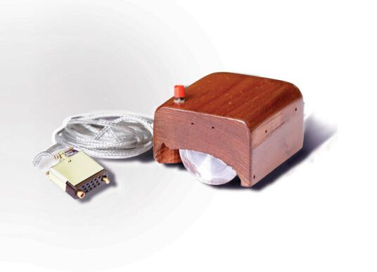
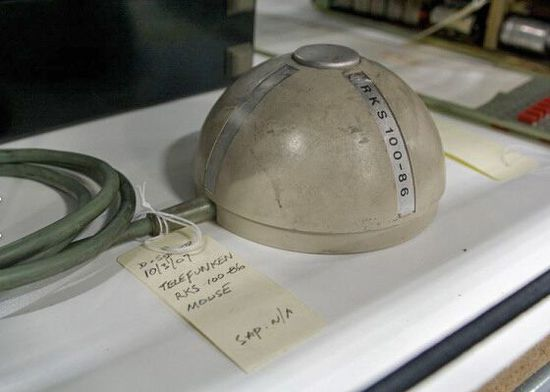
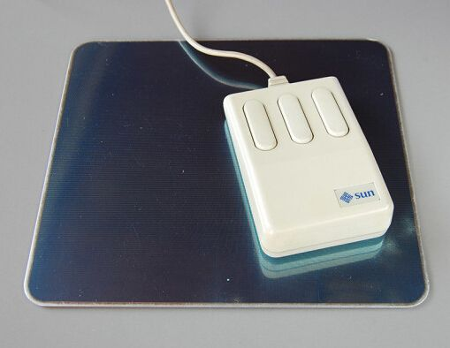
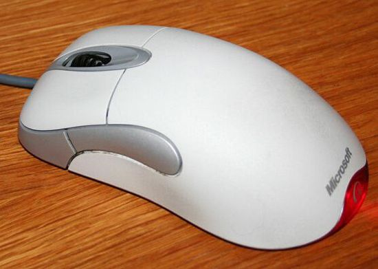
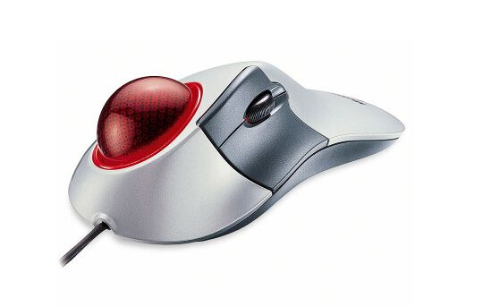
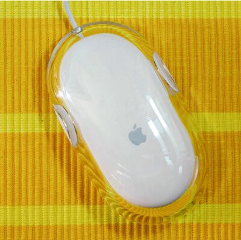
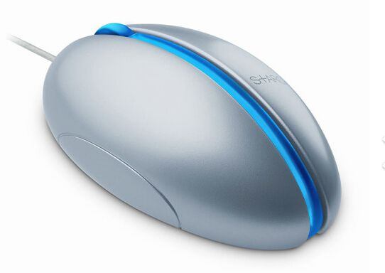

マウスは1960年代半ばの誕生以来、数え切れないほどの変化を遂げてきた。これらの変化により、マウスはより快適で、人間工学的で、持ち運びにも便利になった。本稿では、粗末なマウスから現在の未来的なマウスまでの道のりを振り返る。
家の中のマウス

1968年のMother of All Demos（すべてのデモの母）で、スタンフォード研究所（SRI）のダグラス・エンゲルバートは、さまざまなコンピュータ技術とインターフェースにおけるブレークスルーを世界に披露した。数多くの展示品の中には、1964年に完成したマウスのプロトタイプも含まれていた。当時、人々はマウスを「表示システムのX-Y位置指示器」と呼んでいた。このプロトタイプには2つのホイールと木製の筐体があり、マウスは水平・垂直方向に動かすことができた。SRIが提出したこの特許は1970年に承認され、最終的にAppleやXeroxなどの企業にライセンス供与された。
左右に回転するマウス

SRIがマウスを開発していたのと同時期に、ドイツのTelefunken社も同様のプロジェクトを進めていた。彼らの設計にはホイールもX-Y座標系もなく、球形の構造（後のメカニカルマウスのようなもの）をしていた。転がるボールの設計はSRIのモデルと少し似ているが、ドイツ人が独自に開発したものである。
PARC（ゼロックス・パロアルト研究所）

世界初のデスクトップコンピュータであるAITOは、PARCが1973年に開発し市場に出したものの、これらのパーソナルワークステーションは商業化されず、主にゼロックス社内部や大学キャンパスで使用された。これらの製品はすべて、SRIが開発した特別版の入力インターフェースを備えていた。AITOのユーザーはすぐにマウスに魅了され、マウスの市場性が証明された。
ボールのないマウス

ボール式構造のマウスは、ほこりや汚れが詰まりやすいという問題を抱えていた。1981年、スティーブン・カーシュはマウス用の光学モデルを開発した。同じ年、PARCも同様のバージョンを開発した。これらのマウスは光を利用して動きを追跡するため、ボールが不要になった。ただし、正常に動作させるにはマウスパッドが必要だった。
市場に登場したマウス

ジョブズは1979年にPARCを訪問した際、初めてマウスを目にし、非常に興奮した。この経験から、1983年にAppleが発売したLisaに同様のデバイスを搭載することを着想した。Lisaは最初の商用パソコンである。似ているが角ばったマウスが、1984年にAppleが発表したMacintoshに採用された。
インテリジェント化、マウスパッド不要のマウス

マウスが登場してから数年で、スクロールホイールが次第に追加された。マイクロソフトが1996年に発売したインテリマウスは、ホイール付きマウスの代表的な存在である。1999年、マイクロソフトは従来のボール式設計を光学LEDに置き換えた。もちろん、この問題は1981年にすでに解決されていたが、今回改良された光学マウスはマウスパッドを必要としなくなった。
再びボールが登場

トラックボールマウスは、外部に露出したボールを転がして画面上のカーソルを操作するマウスである。この技術は1950年代まで遡ることができ、当時はカナダのDATARという軍事プロジェクトだった。2000年、マイクロソフトはこの技術とトラッキング技術を組み合わせ、指または親指だけで、突き出たカラフルなトラックボールを操作して正確にカーソルを操作できるようにした。
AppleのPro

Appleは自社製の有線マウスの開発を続けたが、その設計理念は「複雑なものを簡素にする」ことだった。1998年、同社はiMacシリーズ向けに初のUSB接続マウスを発表したが、その円形デザインはほとんどのユーザーに不評で、理解しがたいものでもあったため、「アイスホッケーパック」というあだ名が付けられた。2000年、AppleはProシリーズのマウスを発表した。このマウスは透明なプラスチックに包まれ、目に見えるボタンの代わりに一体型デザインを採用した。
S+ARCK

デザインによって製品の売上を促進したのはAppleだけではなかった。2004年、マイクロソフトは独自開発したS+ARCKをベースにした未来的な光学マウスを発表した。このスタイリッシュなマウスはフィリップ・スタルクによってデザインされ、マイクロソフトが初めてアート要素を製品デザインに取り入れた試みとなった。対称的な構造のため、このマウスは左利きの人にも適している。
視覚の域を超えて

長年にわたり、ソニーはVAIO向けにスタイリッシュでユニークな有線マウスを数多くデザインしてきたが、2006年に発売されたTalk（VN-CX1）ほど目を引くものはほとんどない。このUSB対応マウスは、必要なときに電話に変身する。クラシックな折りたたみ式携帯電話とポータブルマウスを組み合わせたものである。チャット中は、スクロールホイールが音量調節コントローラーとしても機能する。
マウスの発展傾向

ポータブルコンピュータの多様化は、マウスメーカーにデバイスを小型化する新しい方法を模索させることになった。1984年には早くも、ロジクールがワイヤレスマウスをいち早く開発した。2005年、Newton Peripheralsは超薄型デザインのMoGo Bluetoothマウスを発表した。マウスを使用しないときは、コンピュータのカードスロットに挿して充電できる。
信じられない

AppleはProシリーズマウスを改良し、2005年に多方向スクロールボールをサポートするバージョンを発売した。このマウスの2つのボタンは非常に感度が高く、サイドボタンはプログラミングにも対応していた。2009年に発売されたMagic Mouseはさらに簡素化され、滑らかな上面はジェスチャー入力デバイスとなっており、ユーザーはマウス表面のどこでもスクロールやクリックができる。
曲げられるタイプ

マイクロソフトは2010年、再び新製品を発表した。曲げられるArcマウスである。このマウスは、旅行中や未使用時に平らにすることができ、使用するときは手のひらに合うように曲げることができる。前面には感応式タッチスクロールストリップと2つのボタンがあり、残りの部分も曲げることができる。そのBlueTrackテクノロジーは、粗い木の表面やカーペットの上でも使用できると謳われている。
インダストリアルデザイン

2012年にBMWとThermaltakeが協力して以来、マウスのデザインは急速に進化した。彼らが開発した10 Mマウスは、まさにスーパーな工業製品である。このマウスは角度調整に対応し、通気性のあるパームレスト、カスタマイズ可能なボタン、アルミニウム製ベースを備えている。
家のあるマウス

デザインはさておき、どのマウスも快適に使用できるべきである。この点に基づき、日本の玩具メーカーThankoは2010年、加熱式マウスパッド付きマウスを発売した。寒さを効果的に防ぎ、指を暖かく柔軟に保ってくれる。
転載元：http://www.leiphone.com/news/201412/VMCt6DkAn5bpts8y.html